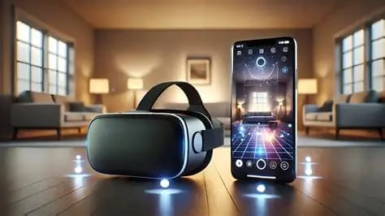
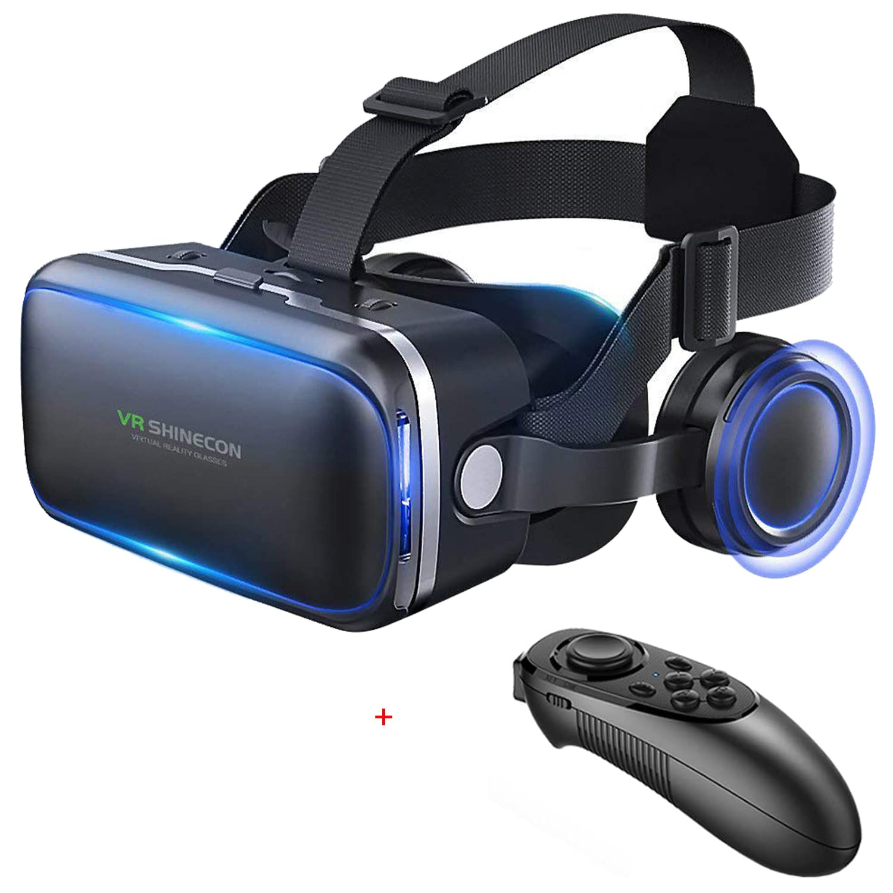
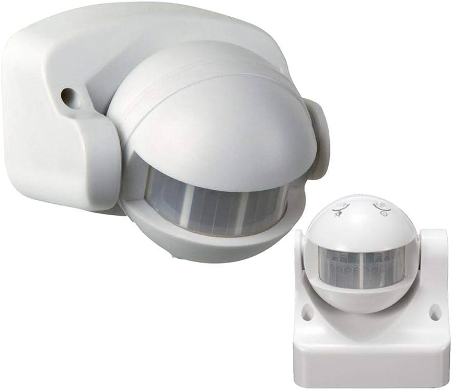
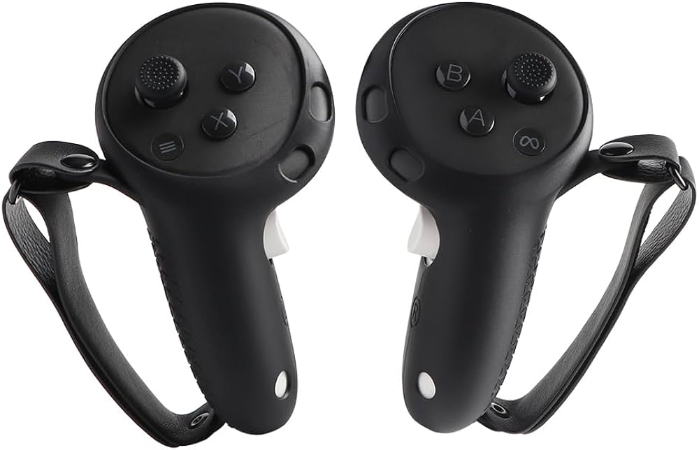
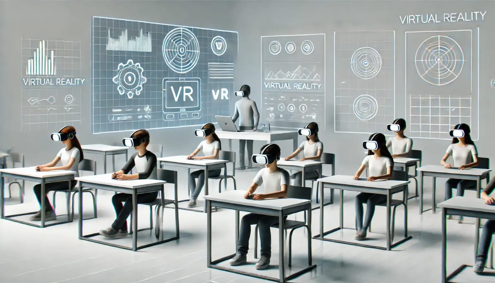
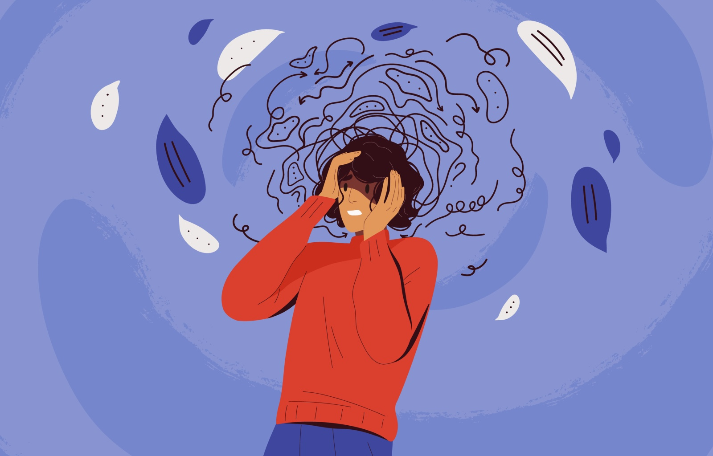

الواقع الافتراضي
هي تقنية تمنحك القدرة على عيش تجارب غامرة في عوالم اصطناعية تحاكي الواقع بدقة مذهلة، لتكسر بها حاجز المكان والزمان وتستكشف مستقبلاً جديداً كلياً

هي تقنية تمنحك القدرة على عيش تجارب غامرة في عوالم اصطناعية تحاكي الواقع بدقة مذهلة، لتكسر بها حاجز المكان والزمان وتستكشف مستقبلاً جديداً كلياً

تعرض الصور ثلاثية الأبعاد

تتبع حركة الرأس والجسم

للتفاعل مع الأشياء داخل العالم الافتراضي

تقوم بتصميم البيئة نفسها
شرح الدروس بشكل تفاعلي (مثل زيارة الفضاء أو جسم الإنسان من الداخل)
تدريب الجراحين على عمليات بدون مخاطر حقيقية
يُستخدم الواقع الافتراضي في ألعاب تجعل اللاعب يشعر أنه داخلها ويتفاعل معها بشكل واقعي.
زيارة أماكن سياحية وأنت في مكانك كأنك موجود بها بالفعل
تدريب الافراد علي المهارات العلمية من خلال محاكاه بيئات العمل الحقيقية
يُستخدم الواقع الافتراضي في علاج بعض الاضطرابات من خلال تعريض المريض بشكل تدريجي لمصدر خوفه في بيئة آمنة ومتحكم فيها
يعطي تجربة واقعية ممتعة
يساعد في التعلم بشكل اسرع
يقلل المخاطر في التدريب العلمي
يرفع مستوي التفاعل والانتباه
يوفر بيئة آمنة لتجربة مواقف خطيرة بدون ضرر
يساعد علي تنمية المهارات العلمية بشكل سريع

تكلفة الاجهزة عالية
يسبب دوخة واجهاد للعين
يحتاج اجهزة قوية لتشغيله
قد يسبب العزلة عن العلم الحقيقي مع الاستخدام المفرط
يحتاج الي خبرة بسيطة للتعامل مع التكنولوجيا
قلة المحتوي العربي